Versão 5 · novembro de 2026 · em validação com a Ourofino
00Capítulo 0 · Aberturaprazer, serafina
Prazer, Serafina
Oi! Eu sou a Serafina, promotora da Ourofino Pet há oito anos. Visito petshop, clínica e loja de bairro de segunda a sábado, e vou com você em cada capítulo deste guia.
0Prazer, Serafina
Serafina
Para que serve este guia
No meu primeiro mês, colei um wobbler na porta do consultório porque ninguém tinha me dito onde ele ia. O veterinário tirou no mesmo dia, e com razão.
Este guia junta o que eu queria ter aprendido antes: o que fazer em cada visita, na mesma ordem, e o porquê de cada regra. Quem entende o porquê decide bem em qualquer loja, mesmo sem ninguém por perto.
0Prazer, Serafina
Como usar o guia
No celular, na loja
Deite o celular para ver um slide por vez ou role a tela na vertical. Use o Índice para pular direto ao assunto.
No treinamento
Passe do começo ao fim, em cerca de 40 minutos. Cada capítulo abre com uma capa e cabe numa conversa curta.
Em papel
O botão PDF gera um arquivo com uma página por slide, para imprimir ou mandar pelo WhatsApp.
Dica da Serafina
A faixa verde no pé do slide traz o que eu aprendi na prática e ninguém ensina.
Erro comum
Quando eu apareço de mão levantada, vem um erro que eu vejo toda semana nas lojas.
Teste final
No fim, nove situações de loja, uma por capítulo. Pode errar à vontade: cada resposta explica o porquê.
A visita começa antes de você entrar na loja e termina depois que você sai. Seguindo a mesma ordem em toda loja, você esquece menos e a equipe entende o que você veio fazer.
1Revise o históricoAbra as fotos e as anotações da última visita. Veja o que a loja tem da Ourofino Pet e o que parou de comprar.
2Liste as pendênciasO que você prometeu levar ou responder e o que ficou sem solução: falta, preço, material quebrado.
3Defina um objetivoUma prioridade que caiba numa frase e apareça na foto de depois. “Banni 3 com preço” serve. “Dar uma geral” não serve.
4Separe o materialSó as peças desta loja e da campanha atual, sem dobra nem sujeira. Leve fita dupla face, flanela, caneta e bloco.
5Monte a rotaA ordem das lojas, o tempo em cada uma e o horário em que cada loja prefere receber você.
Dica da Serafina. Chegue na loja com a foto da última visita já aberta no celular. O gerente lembra do que foi combinado, e você também precisa lembrar.
1Contato no PDV: antes, durante e depois
Na loja: oito passos, sempre nesta ordem
1Chegue e se apresenteEspere o atendimento acabar. Diga nome, empresa, o que veio fazer e quanto tempo leva.
2Leia a lojaAntes de mexer, dê uma volta: farmácia, ração, higiene, caixa e, com licença, o estoque.
3Fotografe antesA prateleira inteira, de frente, a dois passos de distância, sem pessoas na foto.
4Corrija o básicoNesta ordem: produto em falta, limpeza, preço, validade e frente.
5Execute a prioridadeMaterial novo, ponto extra ou cross, só com a prateleira em ordem.
6Converse com a equipeNum momento sem cliente, passe uma informação útil ao balconista. Uma por visita basta.
7Fotografe depoisDo mesmo lugar, na mesma altura e no mesmo ângulo da foto de antes.
8Encerre com o responsávelConte o que fez, o que ficou pendente e quando volta. Agradeça.
1Contato no PDV: antes, durante e depois
A chegada, palavra por palavra
você
“Bom dia! Eu sou a [seu nome], promotora da Ourofino Pet.”
você
“Hoje vim organizar a prateleira de antipulgas e vermífugos e conferir os preços. Levo uns 40 minutos.”
você
“Com quem eu falo antes de começar? Posso trabalhar agora ou você prefere outro horário?”
balconista
“Pode começar. A gerente está lá nos fundos.”
você
“Obrigada. Onde eu deixo a bolsa e as caixas?”
Lembre-se. Você está na casa de alguém. Primeiro se apresenta, depois olha, e só então mexe no produto.
1Contato no PDV: antes, durante e depois
Depois: o registro prepara a próxima visita
1Registre no mesmo diaAinda no carro ou no ponto de ônibus, anote faltas, preços e o que combinou, loja por loja.
2Anexe as fotosAntes e depois, do mesmo ângulo, com nome da loja e data. Apague as que mostram pessoas.
3Avise o supervisorO que não depende de você: falta repetida sem estoque, produto vencido, loja que não deixou trabalhar, pedido de preço ou prazo.
4Deixe a próxima prontaEscreva o objetivo da próxima visita e o que você prometeu levar ou responder.
Lembre-se. Uma falta que ninguém registrou continua na prateleira, porque ninguém soube dela.
02Capítulo 2 · O trabalhoo que é trade
O que é trade marketing
Trade marketing é o trabalho que faz o produto ser encontrado, entendido e escolhido dentro da loja. Na loja pet, quem faz isso na rotina é você.
2O que é trade marketing
76%Em supermercados dos Estados Unidos, 76% das decisões de compra foram tomadas dentro da loja.
Fonte: POPAI, 2012 Shopper Engagement Study, com 2.400 compradores entrevistados antes e depois das compras.
Por que a venda se decide na frente da prateleira
O tutor entra na loja com uma necessidade: o cachorro está com pulga, o gato precisa de vermífugo. A marca, muitas vezes, ele escolhe ali, olhando a prateleira ou ouvindo o balconista.
Trade marketing cuida desse momento. O produto precisa estar lá, à vista, com preço, perto do que o tutor procura, e o balconista precisa saber falar dele. A promotora de sábado ajuda, mas quem garante isso na rotina é a visita bem feita, toda semana.
2O que é trade marketing
O caminho do produto até a casa do tutor
A Ourofino fabrica e vende ao distribuidor. O distribuidor vende à loja: isso é o sell-in. A loja vende ao tutor: isso é o sell-out.
O pedido da loja só se repete quando o produto sai da prateleira. Por isso o seu trabalho mira o sell-out: produto parado no fundo da gôndola não gira, e a loja não volta a comprar.
Na prática
Loja com 10 caixas de Top Dog paradas na prateleira de baixo comprou, mas não vendeu. Ali, o seu trabalho é fazer o produto aparecer.
Ourofinofabrica o produto
abastecimento
Distribuidorcompra, estoca e entrega
sell-in
Lojaexpõe, orienta e vende
sell-out
Tutorleva para casa e usa no pet
2O que é trade marketing
As palavras do trade que você vai ouvir
Sell-in
A venda do distribuidor para a loja. Aparece no pedido.
Sell-out
A venda da loja para o tutor. Aparece na prateleira vazia que precisa de reposição.
Giro
A velocidade com que o produto sai da prateleira. Produto com giro alto pede reposição frequente.
Mix
Os produtos da marca que a loja tem à venda. Anote o que ela tem, o que parou de comprar e o que nunca teve.
Ruptura
O buraco na prateleira onde deveria estar o produto. O tutor não acha e leva outra marca.
PDV
Ponto de venda: a loja, a clínica, o balcão onde o tutor compra. Material de PDV é tudo o que sinaliza o produto ali.
03Capítulo 3 · Na gôndolana gôndola
O básico da gôndola
Antes de qualquer material ou ponto extra, a prateleira precisa estar em ordem. É o que o tutor vê primeiro e o que mais pesa na escolha.
3O básico da gôndola
31%Quando o produto falta, 31% dos compradores vão a outra loja, 26% trocam de marca e 9% não compram nada.
Fonte: Gruen, Corsten e Bharadwaj, “Retail Out-of-Stocks”, estudo da FMI, GMA e CIES com 71 mil consumidores em 29 países, 2002.
Por que um buraco na prateleira custa mais que uma venda
Quando o tutor não acha o produto, ele resolve na hora: leva outra marca, compra em outra loja ou desiste. A venda perdida hoje pode virar o hábito de comprar a concorrente amanhã.
A maior parte das faltas nasce dentro da loja: pedido mal calculado ou caixa esquecida no estoque. Por isso, antes de anotar a falta, pergunte se tem produto guardado. Se tiver, peça licença e reponha. Se não tiver, registre e avise o supervisor.
3O básico da gôndola
Os quatro básicos, nesta ordem
1. Disponível
O produto está na prateleira, na quantidade certa. Quando falta, o nome disso é ruptura.
2. Limpo
Embalagem sem poeira, sem amassado e sem etiqueta velha por cima. Caixa suja parece produto parado.
3. Com preço
Etiqueta embaixo do produto certo, legível de longe. Sem preço, o tutor precisa perguntar, e nem sempre há quem responda.
4. Na validade
Nada vencido na prateleira, e o que vence antes fica na frente.
Dica da Serafina. Confira os quatro sempre nesta ordem. Se o tempo acabar no meio da visita, o mais importante já ficou pronto.
3O básico da gôndola
FIFO: a validade mais curta vai na frente
FIFO vem do inglês first in, first out: o primeiro que entra é o primeiro que sai. Ao repor, puxe para a frente as caixas que vencem antes e coloque o lote novo atrás.
Se a caixa nova fica na frente, a antiga vai para o fundo e vence lá. Produto vencido à venda é crime pelo Código de Defesa do Consumidor. Achou um? Tire da prateleira na hora e entregue ao responsável da loja.
Fonte: Lei 8.078/1990 (Código de Defesa do Consumidor), art. 18, § 6º; Lei 8.137/1990, art. 7º, inciso IX.
3O básico da gôndola
Frente e blocagem: a marca vista de longe
Frente é cada caixa virada para o corredor, com o nome à vista. Blocagem é juntar a mesma linha num bloco só, de cima para baixo, em vez de espalhar caixas pela gôndola.
Um bloco é mais fácil de achar do que cinco caixas soltas. Num teste que rastreou o olhar dos compradores, dobrar as frentes fez a marca ser notada 28% mais vezes.
Fonte: Chandon, Hutchinson, Bradlow e Young, “Does In-Store Marketing Work?”, Journal of Marketing, 2009.
3O básico da gôndola
As três alturas da gôndola
O olhar do tutor cai primeiro na faixa entre o peito e os olhos, de 1,20 m a 1,60 m do chão. É a zona quente: ali ficam o que mais sai e a campanha do momento.
Acima dela, a prateleira ainda é vista. Abaixo de 0,80 m, o tutor precisa se abaixar para ver. Num teste com 348 compradores, a marca nas duas prateleiras de cima foi escolhida 12% mais vezes do que nas duas de baixo.
Fonte: Chandon, Hutchinson, Bradlow e Young, “Does In-Store Marketing Work?”, Journal of Marketing, 2009.
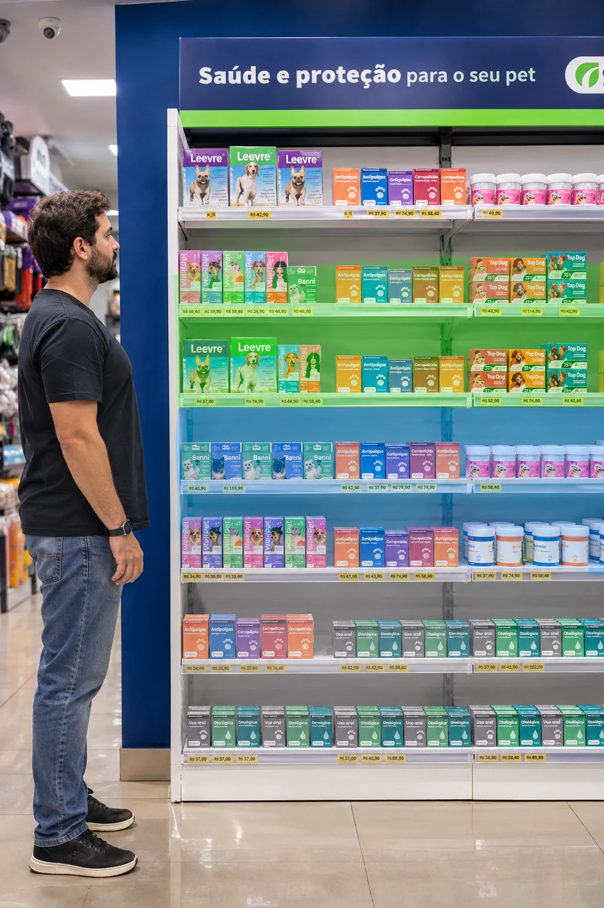
Zona dos olhos1,20 m a 1,60 m · zona quenteZona das mãos0,80 m a 1,20 mZona dos pésabaixo de 0,80 m
3O básico da gôndola
A mesma gôndola antes e depois da visita
Arraste a linha para comparar. Antes: buraco na prateleira, caixas deitadas, preço faltando e marcas misturadas. Depois: cada linha num bloco, frentes viradas para o corredor, preço embaixo de cada produto e a validade mais curta na frente.
Nenhum material novo entrou na foto de depois. A diferença vem só do básico bem feito.
AntesDepois
Lembre-se. Fotografe antes e depois do mesmo lugar e na mesma altura. É assim que o seu trabalho aparece.
04Capítulo 4 · Na gôndolamateriais
Materiais de PDV
Material de PDV é toda peça que sinaliza o produto dentro da loja. Ele trabalha junto com o produto: longe dele, confunde o tutor.
4Materiais de PDV
Na gôndola: seis materiais de prateleira
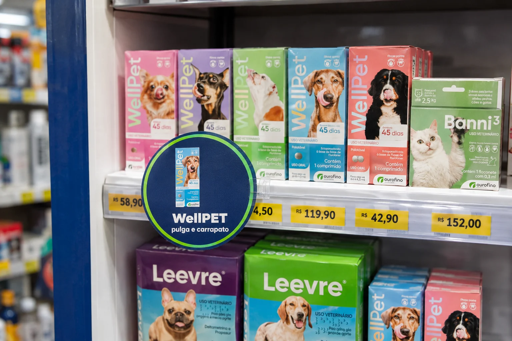
Wobbler
Peça que balança presa à prateleira, bem junto do produto. Um por produto, sem cobrir embalagem nem preço.
Stopper
Placa que sai da gôndola para o corredor e para o olhar de quem passa. Vai no começo do bloco da marca.
Testeira
Placa no alto da gôndola que dá nome à área, como farmácia ou proteção. Fica acima do bloco, sem tapar a luz.
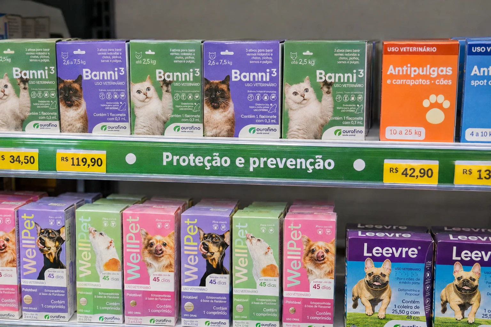
Régua de gôndola
Faixa encaixada na frente da prateleira, na altura do preço. Não pode cobrir a etiqueta da loja.
Clip strip
Fita pendurada com produtos presos, ao lado da gôndola ou em outra área. Bom para cross e compra por impulso.
Cartaz
Peça de parede para campanha ou informação. Fica perto da área do produto, na altura dos olhos, e sai quando a campanha acaba.
4Materiais de PDV
No balcão, no corredor e no chão
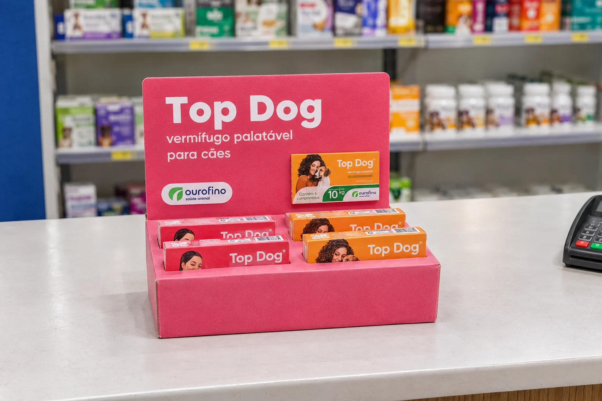
Display de balcão
Pequeno expositor ao lado do caixa ou do balcão da farmácia. Só funciona abastecido.
Take one
Porta-folhetos para o tutor levar para casa, como o calendário de vermifugação. Fica no balcão, sempre com folheto.
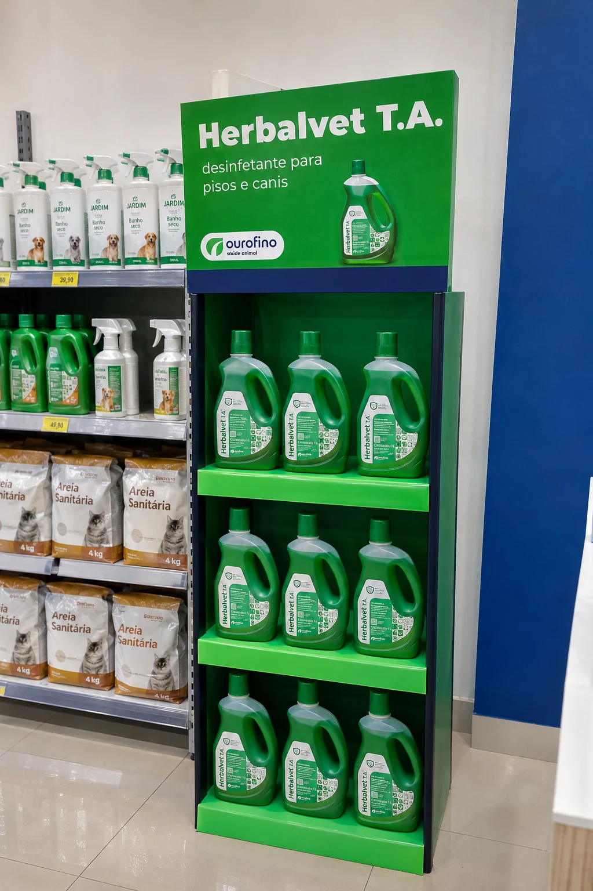
Display de chão
Expositor que fica de pé no corredor. É um ponto extra: só se monta com a gôndola cheia.
Ilha
Ponto extra no meio da loja, visto de todos os lados. Pede espaço livre e passagem para o tutor.
Adesivo de chão
Seta ou marcação no piso que leva o tutor até a área do produto. Nunca em rampa, degrau ou saída de emergência.
4Materiais de PDV
Erro comum
O wobbler na porta do consultório
O que acontece
O promotor instala o material onde sobra espaço: porta do consultório, vidro da vitrine, frente do extintor, em cima do preço. O material fica longe do produto ou atrapalha a loja, e alguém tira no mesmo dia.
Faça assim
Antes de instalar, peça licença a quem autoriza e responda três perguntas. O material está junto do produto que anuncia? Deixa a embalagem e o preço à vista? É da espécie certa, cão na área de cão e gato na área de gato?
Lembre-se. Material demais também atrapalha. Um bom material perto do produto vale mais que três espalhados.
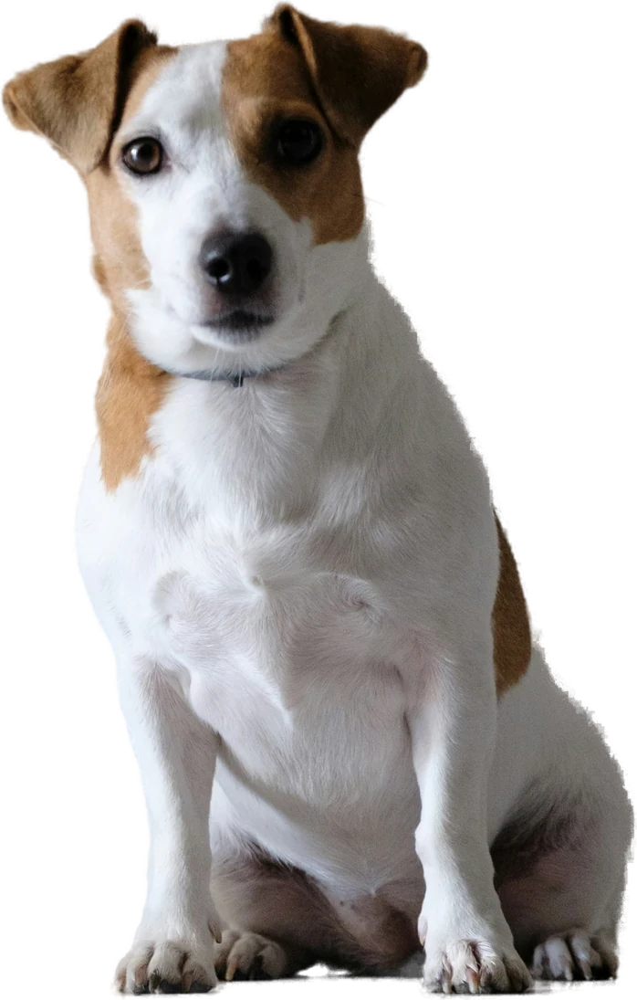
05Capítulo 5 · Na loja todacruzar
Cross merchandising e cross selling
Cross quer dizer cruzar. Você leva a lembrança de um produto até onde o tutor está ou junta dois produtos que resolvem a mesma necessidade.
5Cross merchandising e cross selling
Dois tipos de cross e como achar o seu
Cross merchandising
Material de um produto em outra área da loja, onde está o tutor que precisa dele. Wobbler do Banni 3 na ração de gato, apontando para o balcão.
Cross selling
Venda de um produto junto com outro, pela conversa ou pela exposição. Quem leva o vermífugo Top Dog ouve falar do Herbalvet T.A. para o ambiente.
Como achar o cross
Pare numa área da loja e pergunte: o que o tutor está fazendo aqui? Do que mais ele vai precisar? A resposta aponta o produto.
O teste da frase
Explique o par numa frase curta. “Quem compra areia tem gato em casa” passa no teste. Se você precisar de duas frases, o cross é fraco.
5Cross merchandising e cross selling
O mapa dos cruzamentos
Cada seta sai de uma área da loja e chega ao produto que o tutor dali vai precisar. O material vai na área de origem. O produto continua no lugar dele, na farmácia ou na higiene, com estoque e preço.
Produto perto de produto que combina vende mais. Em supermercados dos Estados Unidos, salgadinho e refrigerante expostos frente a frente no corredor venderam mais de 9% a mais por semana.
Fonte: Bezawada, Balachander, Kannan e Shankar, “Cross-Category Effects of Aisle and Display Placements”, Journal of Marketing, 2009.
Arraste para o lado para ver a planta inteira.
Cross merchandisingo material fica na área e leva o tutor até a farmácia
Cross sellingprodutos que combinam, oferecidos juntos
1Ração de cão material de WellPET e de Plenipil (para pele sensível)
2Coleiras e guias material de WellPET
3Ração de gato material de Banni 3
4Top Dog + Herbalvet T.A. vermífugo para o cão e desinfetante para o ambiente onde ele vive
5EnziClim + Herbalvet T.A. os dois cuidam do ambiente, lado a lado na gôndola
5Cross merchandising e cross selling
O erro do carnaval
Carnaval é quando a vontade de fazer cross espalha material sem lógica pela loja: antipulga de cão na ração de gato, wobbler de suplemento na área de brinquedo, três peças disputando a mesma prateleira.
O tutor não entende o que cada peça quer dizer, e o material vira ruído. Antes de instalar, faça o teste da frase. Se o par não se explica numa frase, ou se a espécie não bate, o material volta para a caixa.
Lembre-se. Material de cão nunca vai para a área de gato, e o de gato nunca vai para a área de cão.
06Capítulo 6 · Na loja todaponto extra
Ponto natural e ponto extra
Ponto natural é o lugar fixo do produto na gôndola. Ponto extra é um segundo lugar, fora dela. O segundo só existe com o primeiro cheio.
6Ponto natural e ponto extra
O ponto extra que esvazia a gôndola
Arraste a linha para comparar. No errado, o promotor tirou os frascos da gôndola para encher o display. O tutor que vai direto à farmácia, como faz toda semana, encontra o buraco e acha que a loja não tem o produto.
No certo, a gôndola continua cheia, e o display recebe só o estoque que sobrou. Ponto extra bem montado vende: num supermercado do Reino Unido, o café exposto no fim do corredor vendeu 73,5% mais.
Fonte: Nakamura e outros, Social Science & Medicine, 2014, com as vendas semanais de 2010 e 2011.
Gôndola cheiao ponto natural continua abastecidoEstoque extra no display
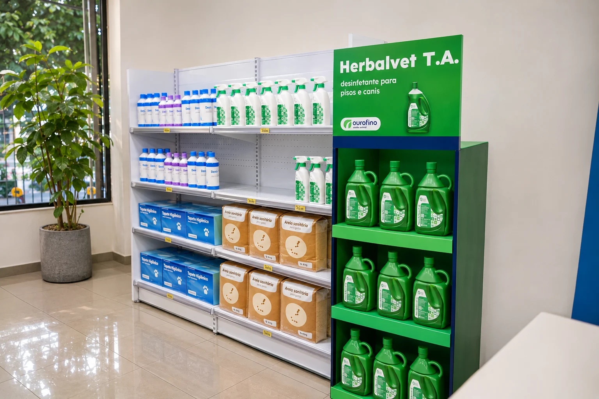
Buraco na gôndolao produto saiu do ponto naturalDisplay cheio
ErradoCerto
6Ponto natural e ponto extra
Como montar um ponto extra sem esvaziar a gôndola
1Complete a gôndolaTodas as frentes cheias, com preço e com a validade mais curta na frente.
2Veja o que sobrouConfira no estoque, ou pergunte ao balconista, quanto produto a loja tem a mais.
3Monte com a sobraO ponto extra recebe só esse estoque, com preço à vista e perto do caminho do tutor.
4Fotografe os doisGôndola cheia e ponto extra na mesma visita. A foto mostra que um não esvaziou o outro.
5Combine a reposiçãoAvise o balconista que o ponto extra também precisa ser reposto até a sua próxima visita.
Dica da Serafina. Produto que fica atrás do balcão não vai para ponto extra no autosserviço. Ali, o ponto extra vira material que leva o tutor a pedir no balcão.
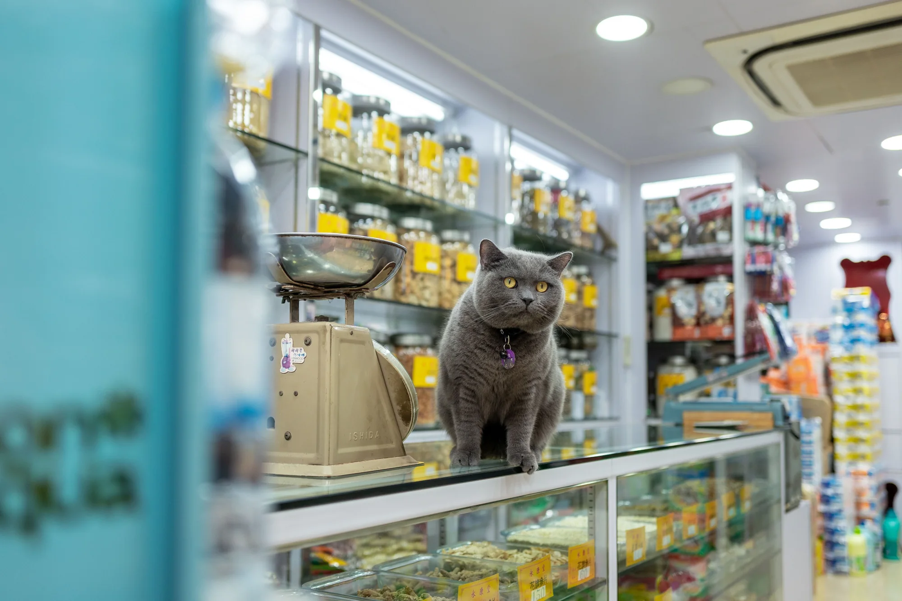
07Capítulo 7 · As pessoasna casa dos outros
Relacionamento, postura e quem decide
A loja deixa você mexer na prateleira dela. Essa confiança se ganha visita a visita, com o jeito de chegar, de trabalhar e de ir embora.
7Relacionamento, postura e quem decide
Você é convidado na loja
Espere a pausa
Com tutor no balcão, você aguarda. Chegue perto quando o atendimento acabar, nunca no meio da venda.
Peça licença
Para mexer na gôndola, entrar no estoque e instalar material. A pergunta leva dez segundos.
Fique fora do caminho
Caixas e bolsa no canto que a loja indicar, longe do corredor e do caixa.
Uma informação por visita
O balconista ouve várias marcas no mesmo dia. Uma informação clara, ligada a um pedido comum do tutor, é a que ele lembra.
Treino e arrumação separados
Arrume a gôndola em silêncio. Fale com o balconista num momento sem cliente, olhando para ele.
Saia melhor do que entrou
Área arrumada, caixas vazias recolhidas e o responsável sabendo o que você fez.
7Relacionamento, postura e quem decide
Os três pilares da relação com a loja
Confiança
“O que você combina, acontece.” Volte no dia marcado e traga o material prometido. Prometa só o que depende de você. Entrega, preço e prazo vão para o supervisor.
Rapidez de resposta
“Quando eu pergunto, você volta.” Não sabe? Diga que não sabe, marque o dia e volte com a resposta oficial, mesmo que seja para dizer que ainda está vendo.
Reconhecimento
“Vale a pena receber você.” Cada visita deixa algo útil. Lembre o nome das pessoas e elogie o fato: “a higiene ficou fácil de achar” diz mais que “tá tudo lindo”.
Dica da Serafina. Quando a loja pedir preço, prazo ou desconto, anote com as palavras do lojista e leve ao supervisor. Esse assunto é do time comercial.
7Relacionamento, postura e quem decide
Quem decide em cada tipo de loja
Decisão
Petshop
Petshop com clínica
Clínica com petshop
Mexer na gôndola
Gerente
Gerente
Recepção ou administrador
Instalar material
Gerente ou dono
Gerente
Veterinário responsável
Indicar produto ao tutor
Balconista
Balconista e veterinário
Veterinário
O que a loja compra
Dono ou comprador
Dono
Veterinário ou administrador
Lembre-se. Quem atende no balcão nem sempre é quem autoriza. Na primeira visita, pergunte quem decide cada coisa.
7Relacionamento, postura e quem decide
Postura em campo
Evite
Entrar no estoque ou no depósito sem autorização
Discutir com funcionário ou com cliente, por qualquer motivo
Falar da marca concorrente, bem ou mal
Deixar produto vencido na prateleira para resolver depois
Faça
Uniforme limpo e crachá à vista desde a porta
Celular só para foto, registro e consulta ao guia
Foto só da gôndola, sem cliente nem funcionário no quadro
Escada da loja para o alto, e caixa pesada com ajuda
Lembre-se. Conflito na loja? Saia da conversa com educação e avise o supervisor no mesmo dia.
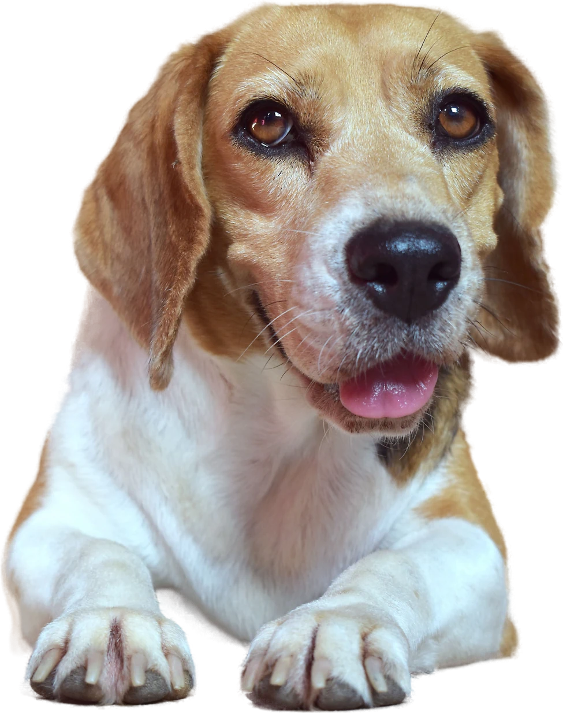
08Capítulo 8 · O produtocomo falar
CBV e produtos heróis
Sete produtos da Ourofino Pet vêm antes de tudo na visita. Para cada um, você sabe o que ele é, onde fica e a frase que o balconista vai repetir para o tutor.
8CBV e produtos heróis
CBV: característica, benefício e vantagem
Característica é o que o produto é: comprimido palatável para cães. Benefício é o que muda para o pet e o tutor: o cão aceita como petisco, e o tutor dá sem briga. Vantagem é o motivo para escolher este: um comprimido protege por até 45 dias.
Para achar o benefício, pergunte “e daí?” depois da característica. A resposta é a frase que o balconista repete.
Na prática
Fale de produto com o balconista e deixe o caso de cada animal para o veterinário.
CCaracterística
O que o produto é ou tem.
Ex.: Comprimido palatável.
BBenefício
O que isso faz pelo pet e pelo tutor.
Ex.: O cão aceita sem briga, e o tutor dá em casa sem estresse.
VVantagem
Por que escolher este.
Ex.: Até 45 dias de proteção com um comprimido.
Exemplo com WellPET, apenas ilustrativo. A frase de cada herói está nos próximos slides.
8CBV e produtos heróis
Prevenção e proteção
CãesWellPET
Comprimido palatável contra pulga e carrapato, com até 45 dias de proteção. Fica na farmácia, com os antiparasitários de cão.
No balcão“É um comprimido que o cão aceita como petisco e que protege por até 45 dias.”
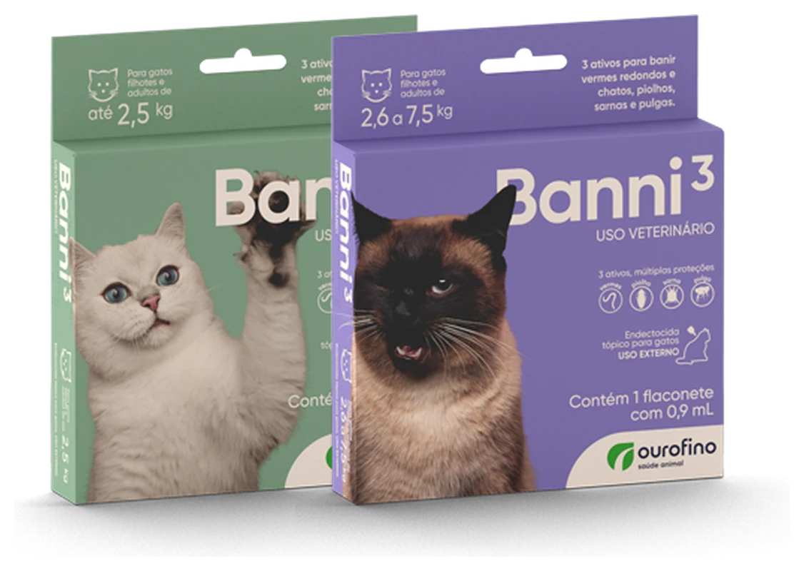
GatosBanni 3
Spot on aplicado na nuca, contra vermes redondos e chatos, pulgas, piolhos e sarnas. Fica na farmácia, na área de gato.
No balcão“Para gato que não aceita comprimido: aplica na nuca e junta várias proteções num produto só.”
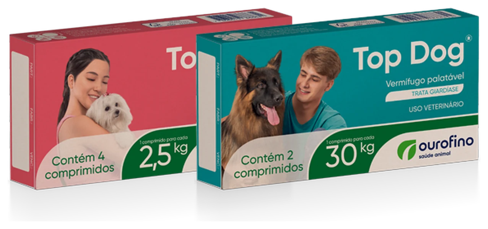
CãesTop Dog
Vermífugo em comprimido palatável, contra vermes redondos e chatos e indicado também para giardíase. Fica com os vermífugos de cão.
No balcão“Tem sabor que o cão gosta e também é indicado para giárdia.”
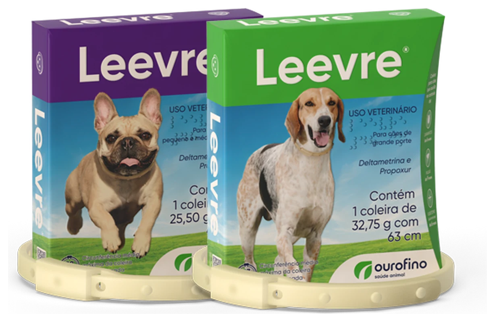
CãesLeevre
Coleira que auxilia no controle de pulga e carrapato e na repelência ao mosquito transmissor da leishmaniose. Em dois tamanhos, por porte.
No balcão“Ajuda no controle de pulga e carrapato e também a repelir o mosquito da leishmaniose.”
8CBV e produtos heróis
Desinfecção e suplemento
AmbienteHerbalvet T.A.
Desinfetante bactericida, fungicida, protozoaricida e viricida, desodorizante, biodegradável e não corrosivo. Fica na higiene do ambiente.
No balcão“Desinfeta e tira o cheiro do canto do pet, e é usado em clínicas veterinárias.”
AmbienteEnziClim
Microrganismos vivos que agem contra odor e mancha de urina, fezes e vômito. Fica lado a lado com o Herbalvet T.A.
No balcão“Para filhote aprendendo a usar o tapete: age no cheiro e na mancha do xixi fora do lugar.”
CãesPlenipil
Tablete mastigável com ômega 3 (EPA e DHA), vitamina A, biotina e selênio, para pele e pelo. Fica com os suplementos de cão.
No balcão“O cão come como petisco, com ômega 3 e outros nutrientes para a pele e o pelo.”
8CBV e produtos heróis
O que você pode e o que não pode dizer
Evite
Dizer quanto dar, de quanto em quanto tempo ou por quanto tempo usar
Dizer que o produto serve para o caso de um animal específico
Prometer resultado, como “acaba com a pulga em um dia”
Falar da marca concorrente para valorizar a Ourofino
Faça
Contar o que o produto é, com as palavras da embalagem e do material oficial
Explicar o benefício e a vantagem como estão no CBV aprovado
Mostrar onde o produto fica e como reconhecer a embalagem
Encaminhar dúvida de uso para o veterinário ou para a bula
Lembre-se. Dúvida sobre um animal específico é do veterinário, mesmo quando você acha que sabe a resposta.
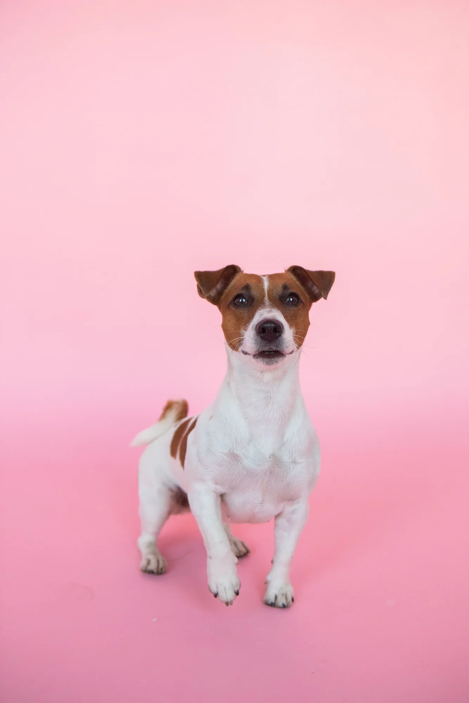
09Capítulo 9 · O produtoa prateleira
Prateleira ideal
Cada loja tem um espaço diferente, e um desenho fixo não cabe em todas. Estas cinco regras funcionam em qualquer farmácia de petshop.
9Prateleira ideal
A farmácia vista de longe
Na prateleira ideal, o tutor acha o que procura sem perguntar. A proteção do cão fica num bloco, a do gato em outro. O que mais sai está na altura dos olhos, e cada bloco da Ourofino encosta no bloco da concorrente que faz a mesma coisa.
Use a foto como referência de ordem. Na sua loja, adapte ao número de prateleiras e ao que a loja tem em estoque.
AntipulgasWellPET e Leevre juntosConcorrente ao ladona mesma alturaVermífugosTop Dog por faixa de pesoSuplementospele e pelo juntos
9Prateleira ideal
As cinco regras da prateleira ideal
Agrupe por necessidade
Produtos para o mesmo problema do animal ficam juntos, como tudo o que protege o cão de pulga e carrapato.
Zona quente para o que mais sai
A faixa na altura dos olhos fica com o que o tutor mais procura e com a campanha do momento.
De cima para baixo
Ocupe primeiro as prateleiras de cima e do meio. Atrás do balcão, o que fica baixo some da vista.
Ao lado da concorrente
Cada bloco da Ourofino encosta no bloco concorrente da mesma função, na mesma altura.
Cão de um lado, gato do outro
Separe as espécies dentro de cada bloco. O balconista acha mais rápido, e o tutor não leva o produto errado.
Dica da Serafina. Farmácia pequena, com uma prateleira só? Fique com as regras um e cinco: agrupe por necessidade e separe cão de gato.
10Para fechar
Serafina
Considerações finais
Se você levar uma coisa só deste guia, leve a ordem da visita: prepara antes, se apresenta, olha, fotografa, corrige o básico e só então faz o resto. Ela funciona em loja grande, em clínica pequena e no dia corrido.
Quando não souber a resposta, diga que vai ver e volte no dia combinado. Eu faço isso até hoje.
10Para fechar
Checklist da visita
marcados
Antes
Durante
Depois
10Para fechar
Teste finalPergunta 1 de 9
1. Amanhã você volta a uma loja que visitou há 15 dias. O que faz antes de sair?
Com objetivo, pendências e material certo, você usa melhor o tempo na loja e resolve o que ficou aberto. (Capítulo 1)
2. A loja comprou 12 caixas de Top Dog há dois meses e ainda tem 10 na prateleira de baixo. O que está acontecendo?
Sell-in é a loja comprando. Sell-out é o tutor levando para casa. Produto parado não gira, e a loja não faz pedido novo. (Capítulo 2)
3. Ao repor a prateleira de Top Dog, onde ficam as caixas com a validade mais próxima?
É o FIFO: primeiro que entra, primeiro que sai. A validade mais próxima na frente evita produto vencido na prateleira. (Capítulo 3)
4. Numa clínica com petshop, onde vai o wobbler do Top Dog?
Material trabalha junto do produto que anuncia. Na clínica, quem autoriza é o veterinário responsável, e a porta do consultório não recebe material. (Capítulo 4)
5. Onde você coloca material do Banni 3 fora da farmácia?
Quem compra ração ou areia de gato tem gato em casa. Material de gato nunca vai para a área de cão. (Capítulo 5)
6. Você tem seis frascos de Herbalvet T.A. para a gôndola e para um display novo. A gôndola comporta seis. O que faz?
O ponto extra só existe com o ponto natural cheio. O tutor que vai direto à gôndola não pode encontrar buraco. (Capítulo 6)
7. O gerente pede um desconto maior no WellPET. O que você responde?
Preço e desconto são do time comercial. Você leva o pedido e volta com a resposta no dia combinado. (Capítulo 7)
8. Um tutor pergunta quantos comprimidos de WellPET dar ao cão dele. O que você faz?
Quantidade e uso para um animal específico são assunto do veterinário. Você mostra a embalagem e encaminha. (Capítulo 8)
9. A farmácia da clínica tem uma prateleira só. Como você organiza os produtos da Ourofino?
Com pouco espaço, valem as regras um e cinco. O balconista acha rápido, e o tutor não leva o produto errado. (Capítulo 9)
Seu resultado0certas de 9
Errou alguma? A explicação mostra o capítulo do assunto. Leia de novo antes da próxima visita.
obrigada pela visita
Tá bem cuidado
Agora é com você. Guarde este guia no celular, volte nele quando bater a dúvida e use o checklist em cada visita. A gente se vê na próxima loja.